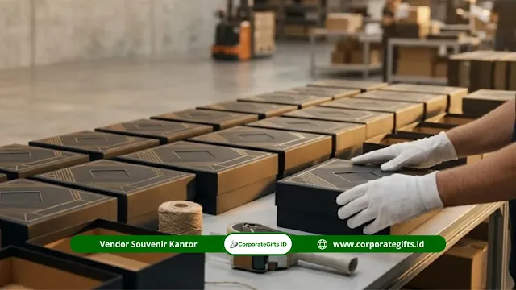

Corporate Gifts ID - Proses kustomisasi souvenir korporat adalah rangkaian tahapan terstruktur yang dimulai dari briefing desain, dilanjutkan persetujuan mockup digital maupun fisik, masuk ke produksi massal, dan diakhiri dengan quality control sebelum distribusi.
Setiap tahap memerlukan persetujuan tertulis dari tim pemesanan untuk mencegah kesalahan cetak atau ketidaksesuaian warna yang baru terdeteksi setelah produksi selesai.
Berdasarkan praktik umum industri merchandise dan gifting, sekitar 70% keluhan souvenir korporat terjadi karena tahap persetujuan mockup dilewati atau dilakukan terlalu tergesa-gesa tanpa inspeksi detail.
Poin Kunci Proses Kustomisasi Souvenir:
- Enam Tahap Baku: Meliputi alur briefing, penyusunan artwork, render mockup, persetujuan tertulis, produksi massal, dan quality control komprehensif.
- Format Logo Vektor: File logo berekstensi vektor (AI, EPS, atau SVG) dengan latar transparan merupakan prasyarat mutlak sebelum tahap layout dikerjakan.
- Standarisasi Warna Pantone: Menggunakan sistem Pantone Matching System (PMS) demi menjamin konsistensi palet warna brand di berbagai media material.
- Lead Time Terukur: Rentang waktu pengerjaan produksi setelah approval berkisar antara 10 hingga 21 hari kerja sesuai kompleksitas produk.
- Sampel Fisik VIP: Sangat dianjurkan untuk pemesanan di atas 200 unit atau suvenir eksekutif bernilai tinggi guna mengeliminasi risiko salah produksi.
Apa Saja Tahapan Proses Kustomisasi Souvenir Korporat?
Kustomisasi souvenir korporat melewati enam tahap utama yang harus dilalui secara berurutan. Melewati salah satu fase kerap menjadi pemicu utama hasil akhir cinderamata tidak memuaskan atau meleset dari spesifikasi awal.
Tahap 1: Briefing Kebutuhan ke Vendor
Briefing yang baik mencakup informasi tentang jenis produk yang diinginkan, volume order, anggaran per unit, timeline acara, dan panduan visual merek (brand guideline). Semakin lengkap briefing yang disampaikan, semakin kecil kemungkinan terjadinya revisi desain yang menguras waktu dan tenaga kedua belah pihak.
Beberapa dokumen krusial yang wajib disiapkan sebelum mengajukan briefing ke vendor:
- File logo dalam format vektor murni (AI, EPS, atau SVG) dengan latar belakang transparan.
- Brand guideline korporat atau minimal kode warna Pantone resmi yang diaplikasikan perusahaan.
- Contoh visual referensi produk yang diinginkan (opsional namun sangat membantu tim kreatif).
- Data estimasi volume pesanan dan profil target segmen penerima souvenir.
Tahap 2: Desain Artwork oleh Tim Vendor
Setelah dokumen briefing diterima, tim desain grafis vendor akan menyusun artwork presisi yang mengadaptasikan elemen visual merek dengan kontur, ukuran, serta batas area cetak (print area) dari item yang dipilih.
Pada fase ini, vendor profesional juga akan merekomendasikan teknik branding yang paling optimal, seperti grafir laser (laser engraving), emboss/deboss kulit, sablon presisi, cetak sublimasi, UV flatbed printing, bordir komputer, hingga hot stamping foil emas/perak berdasarkan sifat alami material dasar cinderamata.

Pemeriksaan fisik sampel cetak dan packaging gift box untuk memastikan kesesuaian dimensi logo serta kualitas finishing produk.
Tahap 3: Presentasi Mockup Digital
Vendor menyajikan representasi visual berupa mockup digital multi-sudut (multi-angle view) yang memperlihatkan bagaimana penempatan logo, perpaduan warna, dan tipografi akan tampak pada produk jadi. Mockup digital umumnya diserahkan dalam format dokumen PDF resolusi tinggi atau gambar pratinjau interaktif.
Periksa dengan cermat posisi penempatan logo, proporsi ukuran relatif terhadap luas produk, kontras warna latar, serta kerapian penataan layout sebelum memberikan konfirmasi.
Tahap 4: Persetujuan atau Revisi Mockup
Jika mockup digital telah disetujui oleh manajemen atau tim pengadaan, segera terbitkan persetujuan tertulis (approval sheet) kepada pihak vendor. Sebaliknya, jika masih ditemukan ketidaksesuaian, berikan catatan revisi yang spesifik dan terukur. Hindari arahan ambigu seperti "logonya diperbesar sedikit" tanpa menyertakan ukuran pasti dalam milimeter atau rasio persentase.
Untuk produk bernilai tinggi atau order berskala besar (di atas 200 hingga 500 unit), mintalah pembuatan mockup fisik (sample proofing) sebelum lini perakitan massal dimulai. Biaya sampel fisik umumnya dapat didebit atau dipotong langsung dari total tagihan invoice apabila pemesanan berlanjut.
Tahap 5: Produksi Massal
Segera setelah surat persetujuan mockup resmi diteken, proses manufaktur dan pencetakan massal akan langsung dijadwalkan di pabrik atau workshop. Estimasi waktu pengerjaan (lead time) bervariasi bergantung pada kategori produk serta tingkat kesulitan pengerjaan.
| Kategori Produk Souvenir | Estimasi Lead Time Produksi | Teknik Personalisasi Umum |
|---|---|---|
| Mug Keramik / Kanvas Tote Bag | 7 - 14 Hari Kerja | Sablon presisi, decal bakar, sublimasi warna |
| Tumbler Stainless Steel / Powerbank | 10 - 21 Hari Kerja | Laser engraving presisi, UV print relief |
| Plakat Kristal / Agenda Kulit Organiser | 14 - 30 Hari Kerja | Grafir 3D crystal, deboss/emboss kulit, plat logam |
| Gift Set Eksklusif / Hamper Custom Box | 10 - 21 Hari Kerja | Assembly manual, hot stamping foil, custom foam insert |
Tahap 6: Quality Control dan Pengiriman
Sebelum seluruh produk dikemas ke dalam kardus ekspedisi dan dikirim ke kantor Anda, vendor terpercaya wajib menjalankan prosedur Quality Control (QC) ketat. Pemeriksaan acak (random sampling) dilakukan minimal pada 5% hingga 10% dari total unit dalam satu batch produksi.
Aspek yang diverifikasi mencakup konsistensi saturasi warna, ketajaman hasil cetakan atau ukiran, fungsi mekanis barang (seperti engsel, tombol klik, atau daya pengisian), ketiadaan cacat fisik atau goresan, hingga kerapian kemasan luar.
Apa yang Harus Diperiksa Saat Menerima Mockup dari Vendor?
Ketika menerima file lembar kerja mockup dari vendor, luangkan waktu untuk memverifikasi lima elemen penentu keberhasilan produksi berikut:
- Akurasi Warna Logo: Cocokkan kode warna digital dengan panduan Pantone resmi guna menghindari perbedaan persepsi tampilan monitor.
- Proporsi & Tata Letak: Pastikan ukuran logo tidak terlalu dominan atau justru terlalu kecil sehingga sulit terbaca saat digunakan.
- Keterbacaan Tipografi: Cermati ejaan nama instansi, teks tagline acara, atau angka tahun peringatan (anniversary).
- Kesesuaian Font: Verifikasi jenis font yang diaplikasikan telah selaras 100% dengan identitas brand korporat Anda.
- Area Bebas Cetak (Safe Margin): Pastikan penempatan elemen grafis tidak terpotong garis jahitan, lekukan botol, atau lipatan kemasan.
Kesimpulan Praktis
Proses kustomisasi souvenir korporat yang berjalan mulus dan tepat waktu merupakan buah dari briefing yang komprehensif, ketelitian saat menyetujui mockup, serta komunikasi dua arah yang transparan dengan pihak vendor. Mengabaikan satu tahapan dengan dalih mengejar tenggat waktu justru berpotensi memicu kerugian finansial dan mencoreng reputasi korporasi akibat cacat produksi.
Percayakan pengadaan cenderamata perusahaan Anda kepada vendor profesional yang memiliki alur operasional teruji dan jaminan garansi mutu. Pelajari juga panduan pengadaan relevan lainnya untuk memperkaya wawasan Anda:
- Souvenir Ulang Tahun Perusahaan Sesuai Anggaran Procurement
- Souvenir Premium Ulang Tahun Perusahaan untuk Mitra Bisnis
- Cara Memesan Souvenir Perusahaan dalam 6 Langkah Mudah
Pertanyaan Seputar Kustomisasi Souvenir Korporat (FAQ)

Ditulis oleh: Arinda Zakia
Senior Corporate Gifting SpecialistSpesialis strategi merchandise korporat, kurasi hadiah B2B, dan manajemen pengadaan souvenir institusi dengan pengalaman lebih dari 7 tahun mendampingi ratusan perusahaan di Indonesia.
Lihat Profil Lengkap & Panduan Lainnya